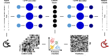

Der digitale Phaenotyp
Dr. med. Veith Weilnhammer
Klinik fuer Psychiatrie und Psychotherapie, Charite - Universitaetsmedizin Berlin
Helen Wills Neuroscience Institute, University of California Berkeley


It started with strange noises through the wall, faint and hard to identify.
Over time, I could make out the voice of my neighbor.
At first, I only heard the voice in my apartment, but later it followed me to other places.


(1) Feature discovery: Mechanismen psychischer Erkrankung entdecken
(2) Feature engineering: Karten psychischer Gesundheit erstellen
Feature discovery

It started with strange noises through the wall, faint and hard to identify.
Over time, I could make out the voice of my neighbor.
At first, I only heard the voice in my apartment, but later it followed me to other places.

It started with strange noises through the wall, faint and hard to identify.
Over time, I could make out the voice of my neighbor.
At first, I only heard the voice in my apartment, but later it followed me to other places.


Aktivität im inferioren frontalen Kortex
Cortico-corticales Feedback
NMDAR-abhängige Dynamik von Lernen und Vorhersage
Stacked Axes

User in 3D Space
All Participants + User

Rotation (GIF)

Feature engineering
- Bogazici mouse tracking data set (24 users, 2550 h of naturalistic computer use)
- LSTM autoencoder to reconstruct cursor movements
- N-dimensional latent representation = Feature
LSTM Autoencoder

Feature engineering
- Bogazici mouse tracking data set (24 users, 2550 h of naturalistic computer use)
- LSTM autoencoder to reconstruct cursor movements
- N-dimensional latent representation = Feature
- Result: Cursor movements can be compressed into low-dimensional feature vectors
Identifying individuals
- Cursor tracking in 1000 individuals (5 to 20 minutes)
- K-means clustering over all features + cluster frequency within participants
- Support vector classification of identity
LSTM Autoencoder
Identifying individuals
- Cursor tracking in 1000 individuals (5 to 20 minutes)
- K-means clustering over all features + cluster frequency within participants
- Support vector classification of identity
- Result: Identification more than two orders of magnitude above chance
Predicting mental health
- Cursor tracking in 1000 individuals (5 to 20 minutes)
- K-means clustering over all features + cluster frequency within participants
- Reports on 66 mental health questions (BSI and MHC-SF)
- Support vector regression of responses to questions
LSTM Autoencoder
LSTM Autoencoder
Predicting mental health
- Cursor tracking in 1000 individuals (5 to 20 minutes)
- K-means clustering over all features + cluster frequency within participants
- Reports on 66 mental health questions (BSI and MHC-SF)
- Support vector regression of responses to questions
- Result: Cursor movements are predictive of mental health
Open questions
- Dimensional representation of mental health: SHAP analysis
- Generalization over time + sensitivity to change: Re-test
- Generalization to other questionnaires: Prediction of / calibration to BDI etc.
- Calibration to naturalistic browsing + individuals: dense sampling in individual participants (maybe you)